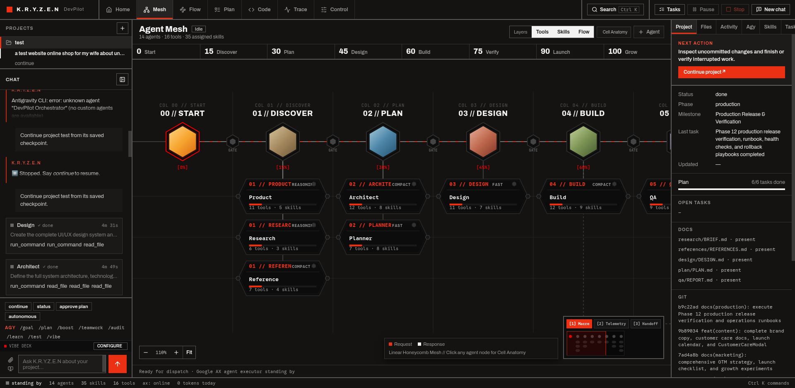
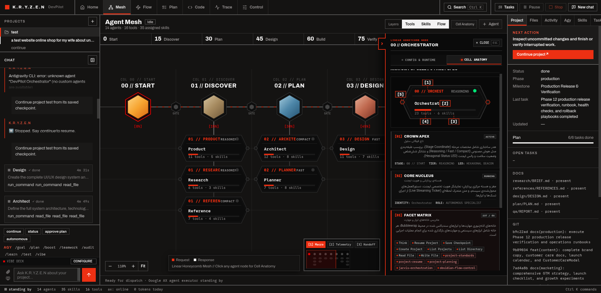

Autonomous AI Product
Engineering Mesh & Vibe Studio
Industrial-grade Swiss-Modernist telemetry control engine. Sovereign, local-first multi-agent orchestration running directly on your computer with pure Python 3 standard library.

Deterministic Multi-Agent Engineering
Built for developers who value sovereign execution, absolute transparency, and zero third-party framework bloat.
Zero-Dependency Engine
Runs 100% on standard Python 3 modules (http.server, urllib, sqlite3, json, subprocess). No virtual environments or fragile pip dependencies required to launch the core mission control daemon.
Linear Honeycomb Mesh
Replaces tangled multi-agent chat loops with 6-facet hexagonal agent modules connected via 90-degree orthogonal Manhattan circuit traces, real-time stage gate breakers, and microsecond SSE telemetry packets.
Interactive Vibe Studio
Tactile product design feedback. Click any UI element in live generated web applications to instantly generate structured feedback prompts, tweak CSS dials live, or roll back states via deterministic Time-Travel Checkpoints.
Anatomy of the Honeycomb Cell
Every specialist agent node in K.R.Y.Z.E.N is rendered as an elongated hexagonal facet with five dedicated sub-assemblies.

| PART | FACET | TELEMETRY SPECIFICATION |
|---|---|---|
| 01 | Status Crown | Displays stage index (00..07), agent codename, and compute tier badge (REASONING, FAST, COMPACT). |
| 02 | LED Pulse Core | Hexagonal live telemetry beacon indicating active compute, idle readiness, or pipeline gate locks. |
| 03 | Execution Matrix | Live tracking of execution step counters, call frequency, and real-time response handoffs. |
| 04 | Facet Counter | Granular tally of sandboxed tool permits and loaded capability skills bound to the node. |
| 05 | Bus Docking Ports | Dual docking ports (-98px inbound / +98px outbound) connecting orthogonal Manhattan circuit traces. |
The 0-to-100 Autonomous Lifecycle
Deterministic state transitions with automated stage gate breakers preventing regressions.
Orchestrator
Task intake, project initialization, master checkpoint coordination.
Research & Product
Market benchmarks, competitor analysis, PRD specifications.
Planner & Architect
Service boundaries, ADRs, atomic task breakdowns.
Design & Tokens
Swiss UI design systems, typography scale, WCAG AA compliance.
Full-Stack Engineering
Frontend, backend APIs, database schemas, clean scaffolding.
Browser QA & Tests
Headless Chromium journeys, visual regression, 113/113 unit tests.
DevOps & Security
Multi-stage Docker, systemd units, OWASP security hardening.
SEO & Marketing
Structured JSON-LD schemas, dynamic XML sitemaps, social cards.
Quickstart & Local Deployment
Get K.R.Y.Z.E.N running on your machine in under two minutes.
# 1. Clone the repository
git clone git@github.com:Hossein4163/KRYZEN.git
cd KRYZEN
# 2. Configure environment credentials
cp agent/runtime.env.example agent/runtime.env
# Edit agent/runtime.env with your API keys (Gemini, Claude, or local Ollama)
# 3. Start the Mission Control server
cd agent
./jarvis/start.sh
# Mission Control will be live at http://127.0.0.1:8770